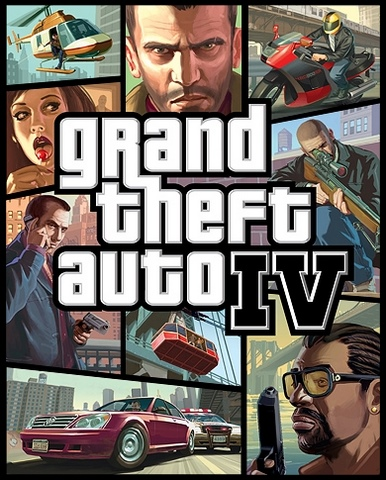

Grand Theft Auto IV (zināms arī kā GTA IV) ir smilšu kastes, darbības un braukšanas žanru datorspēle, kuru izstrādājis Rockstar North.[2] Tā ir devītā spēlē Grand Theft Auto datorspēļu sērijā, un tā ir pirmā GTA spēlē septītās paaudzes konsolēm (neieskaitot Liberty City Stories un Vice City Stories), kas iznāca uz PSP. Spēles priekštecis ir Grand Theft Auto: San Andreas. Spēle tika izdota visā pasaulē vienlaicīgi (izņemot Japānā) Xbox 360 un PlayStation 3 konsolēm.[3] Divas epizodiskas pakas tiks izdotas ekskluzīvi Xbox 360 versijai, pirmā tiks izdota 2009. gada sākumā. Spēlēs Xbox 360 un PlayStation 3 versijas tiks izdotas Japānā.[4][5] Spēle Ziemeļamerikā uz PC tika izdota 2. decembrī un Eiropā 3. decembrī.
Spēle notiek izdomātā Libertīsitijā, kas ir balstīta uz mūsdienu Ņujorkas. Spēles galvenais varonis ir Niko Beličs, kara veterāns no Dienvidslāvijas, kurš dodas uz ASV, lai izdzīvotu amerikāņu sapni,[6] taču drīz vien Niko tiek iepazīstināts ar Ņujorkas noziedzniekiem, bandām un citam nelikumīgām lietām. Kā iepriekšējās GTA spēlēs arī GTA IV lielākā spēles daļa sastāv no braukšanas un trešās personas šāvēja elementiem, un arī kā parasti spēlē spēlētājam ir dota "atvērta pasaule", pa kuru pārvietoties, pildot misijas un zogot transporta līdzekļus. GTA IV ir pirmā GTA konsoļu spēle, kurai standartā ietilpst daudzspēlētāju režīms ar piecpadsmit dažādiem spēlēšanas veidiem.
